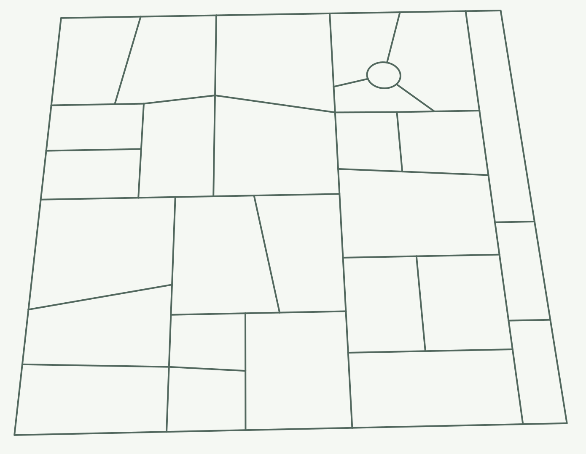
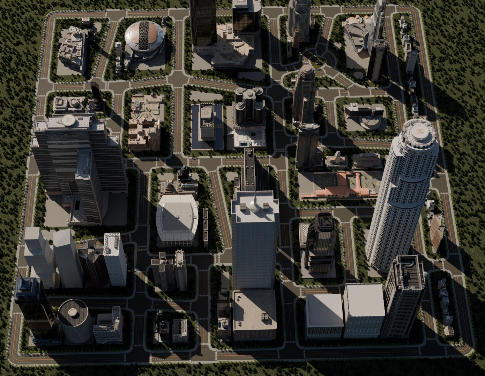
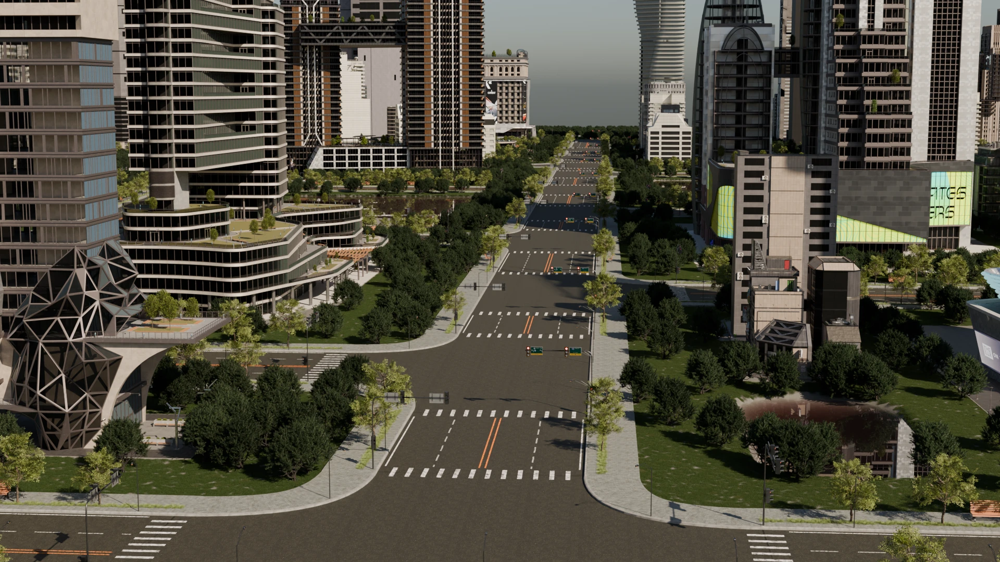
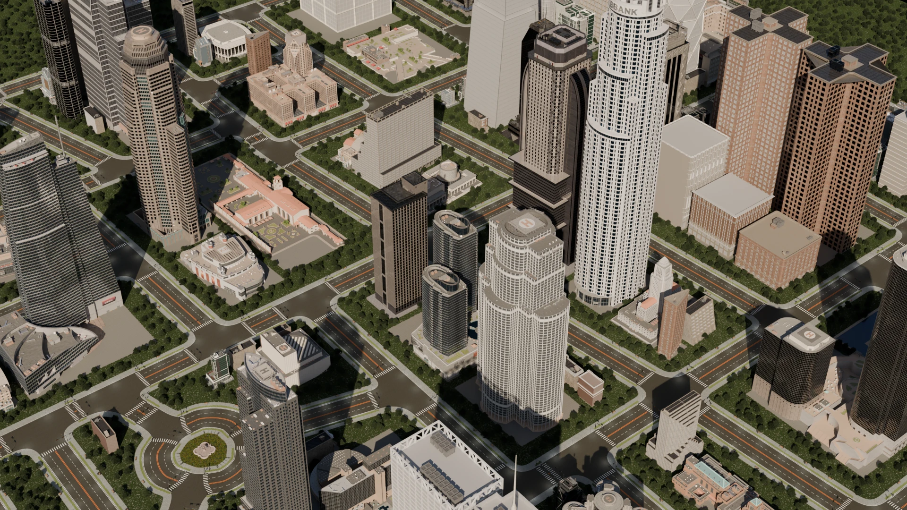
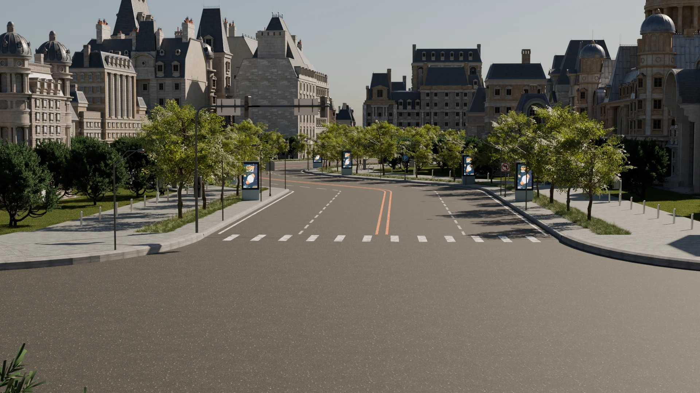
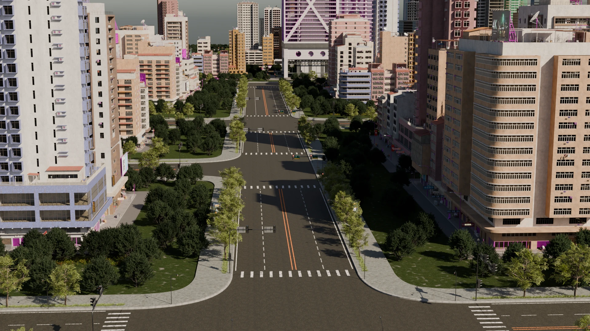

Semantic map
Semantic map
 Generated scene
Generated scene
Use the arrows to browse three maps and their corresponding scenes.
“Build an old town with a winding road through it.”
LLM-CITY builds the neighborhood in Blender. Pick a building along the road and ask for a different style.


The requested roundabout appears in both the road plan and the finished neighborhood.
A medium-sized city on a regular grid with one roundabout.


Import an existing street network from OpenStreetMap, or lay out a neighborhood with a semantic map.
Semantic map
Generated scene
Use the arrows to browse three maps and their corresponding scenes.
Four generated neighborhoods, with excerpts from their prompts.

“A futuristic district with a multiway junction and an S-curve.”

“A modern downtown with a roundabout at its center.”

“A European old town with an S-curve road running through it.”

“A Hong Kong-style district with tall, slender towers.”
Follow a drive through the city to see its streets and buildings up close.